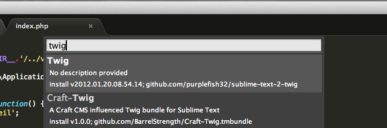

H2 - P2018
Développement web
Cours 34 - 2015-05-04
github : https://github.com/brunosimon/hetic-p2018
site : http://bruno-simon.com/hetic/p2018/
contact : bruno.simon@hetic.net - @bruno_simon
Silex
Templating
- Actuellement, les contenus sont renvoyés dans le return des fonctions alors qu'on aimerait avoir de vraies pages HTML
- Nous allons utiliser un moteur de templating
- Jusqu'à présent, pour rajouter du contenu PHP dans une page, il fallait ouvrir et fermer PHP (<?php ?>) puis faire un echo de la variable.
De même pour les boucles - PHP est un language de templating, mais il est loin d'être parfait et la page devient rapidement confuse
- C'est pourquoi il existe des moteurs de templating (template engine) dédiés à cette tâche
Liste de moteurs de templating
Puisque Silex est conçu pour fonctionner facilement avec Twig, nous allons utiliser ce dernier : http://twig.sensiolabs.org/
La première chose à faire est de configurer son éditeur de code pour qu'il supporte la syntaxe de Twig
Sur Sublime Text
- Si ce n'est pas déjà fait, installez Package Control
- Ouvrez le panneau de commandes
(CMD + SHIFT + P ou CTRL + SHIFT + P) - Tapez "Install Package"
- Faites ENTRER
- Tapez "Twig"
- Faites ENTRER


Il faut ensuite rajouter le service Twig à Silex
- Allez dans index.php
- Rajoutez le code suivant juste avant les routes
- Créez un dossier views à côté de index.php
// Twig
$app->register(new Silex\Provider\TwigServiceProvider(), array(
'twig.path' => __DIR__.'/views',
));
- La méthode ->register() permet de rajouter un service à Silex
- Le premier paramètre est une instance de ce service
-
Le second paramètre correspond aux éventuelles options
- Il s'agit d'un tableau associatif
- Il faut se référer à la documentation de chaque service pour savoir quoi mettre
Nous venons de rajouter Twig à Silex et nous avons créé un dossier qui va contenir nos vues (ou HTMLs, ou templates)
Il faut maintenant créer ces vues et indiquer aux routes de les utiliser
- Créez un fichier example.twig dans le dossier views
-
Ajoutez-y le code suivant
Value : {{value}}
-
Dans index.php, rajoutez ou remplacez la route pour la home par
$app->get('/',function() { global $app; $data = array( 'value' => 'Toto' ); return $app['twig']->render('example.twig',$data); }); - Rendez-vous sur la home du site
Dans index.php
- Nous avons utilisé global pour récupérer $app dans la fonction
- Nous avons créé un tableau associatif
-
Nous avons appelé la méthode ->render() sur $app['twig']
- Le premier paramètre correspond au chemin de la vue
- Le second paramètre correspond aux données
Dans example.twig
- {{}} permet d'afficher le contenu d'une variable
- C'est l'équivalent d'un echo
- Le nom de la variable correspond à la clé dans le tableau $data
Alternative au global
$app->get('/',function() use ($app)
{
/* ... */
});
Quelques exemples d'utilisation de Twig
(Pour aller plus loin, utilisez la documentation Twig)
echo
Faire un echo d'une variable et d'un tableau indexé
index.php
$data = array(
'value' => 'Toto',
'lorem' => array(
'foo' => 'bar'
)
);
return $app['twig']->render('example.twig',$data);
example.twig
{{value}}
<br>{{lorem.foo}}
filters
Il est possible d'appliquer des filtres
index.php
$data = array(
'value' => ' Toto'
);
return $app['twig']->render('example.twig',$data);
example.twig
{{value|trim}}
{{value|upper}}
{{value|replace('O','A')|reverse}}
{{value|reverse}}
{{value|trim|upper|replace('O','A')|reverse}}
- Les filtres sont séparés par des pipes | et appliqués dans l'ordre de gauche à droite
- La liste des filtres est disponible dans la documention Twig
Conditions
Il est possible d'utiliser des conditions (if)
index.php
$data = array(
'value' => false
);
return $app['twig']->render('example.twig',$data);
example.twig
{% if value %}
Vrai !
{% else %}
Faux !
{% endif %}
Pour un if et tout ce qui n'implique pas de faire un echo, nous n'utilisons pas la double accolade mais {% if ... %}
Boucler
Il est possible de boucler sur un tableau (foreach)
index.php
$data = array(
'values' => array(
'key1' => 'a',
'key2' => 'b',
'key3' => 'c',
'key4' => 'd',
'key5' => 'e',
)
);
return $app['twig']->render('example.twig',$data);
example.twig
{% for item in values %}
{{item}}
{% endfor %}
En gardant les clés
example.twig
{% for key, item in values %}
{{key}} = {{item}}
{% endfor %}
Tout comme il est possible de faire un for classique
example.twig
{% for i in range(0,3) %}
{{i}}
{% endfor %}
{% for i in range(low = 2, high = 10, step = 2) %}
{{i}}
{% endfor %}
Set
Il est possible de définir une variable
example.twig
{% set foo = 'bar' %}
{{foo}}
Fichiers sources (CSS, JS, Images, ...)
Si vous souhaitez faire un lien vers un fichier, il est nécessaire de l'écrire en absolu
Vous pouvez récupérer l'URL du site de cette manière
<link rel="stylesheet" href="{{app.request.basepath}}/src/css/style.css">
Include
Il est possible d'inclure d'autres templates Twig
example.twig
{{include('partials/header.twig',{title:'example'})}}
{{include('partials/footer.twig')}}
partials/header.twig
<!doctype html>
<html lang="en">
<head>
<meta charset="UTF-8">
<title>{{title}}</title>
<link rel="stylesheet" href="src/css/style.css">
</head>
<body>
partials/footer.twig
</body>
</html>
Extends / Block
Enfin, Twig propose des systèmes d'extends et de blocks qui font la force du moteur
- Extends permet à un template d'hériter d'un autre template
- Block permet de définir un morceau du template hérité qui pourra être écrasé par l'hériteur
Idéal pour définir un layout
Il existe encore d'autres fonctionnalités qu'il est possible de retrouver dans le documentation
Nous allons avoir besoin de créer des liens entre les différentes pages
Nous pourrions écrire le lien en brut mais nous allons plutôt utiliser un Service adapté
-
Rajoutez le service dans index.php (comme pour Twig)
// Url Generator $app->register(new Silex\Provider\UrlGeneratorServiceProvider()); -
Appliquez la méthode bind() sur chacune des vues pour leur donner des identifiants (noms)
/* ... */ ->bind('home'); /* ... */ ->bind('page'); /* ... */ ->bind('category');
URL Generator fonctionne parfaitement avec Twig
Les fonctions sont url() (pour une URL absolue) et path() (pour un chemin relatif)
home.twig
{% include 'inc/header.twig' %}
<a href="{{url('home')}}">Home</a>
<br />
{% for i in range(1,5) %}
<a href="{{url('page',{page:i})}}">Page {{i}}</a>
{% endfor %}
<br />Home
{% include 'inc/footer.twig' %}
Nous pouvons désormais lier les différents pages entre elles et créer le contenu de ces pages
Il est temps de créer et récupérer les données